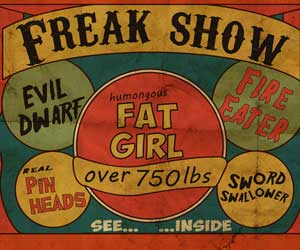

|
| Home|Talent|Cosmetic|Deformity|Abnormal|Ethnological |
Welcome to the Freak ShowFreak shows were popular in the taverns and fairgrounds where the freaks were often combined with talent displays. For example in the 18th century, Matthias Buchinger, born without arms or lower legs, entertained crowds with astonishing displays of magic and musical ability, both in England and later, Ireland. This website will cover a whole host of freaks and how and why people exploited them during the Freak Shows in the Victorian Era. Categories will include the following: Abnormal, Cosmetic, Deformity, Ethnological, and Talent. It was in the 19th century, both in England and the United States, where freak shows finally reached maturity as successful commercially run enterprises. The Victorian freak show was at once mainstream and subversive. Spectacles of strange, exotic, and titillating bodies drew large middle-class audiences in England throughout much of the nineteenth century, and souvenir portraits of performing freaks even found their way into Victorian family albums. At the same time, the imagery and practices of the freak show shocked Victorian sensibilities and sparked controversy about both the boundaries of physical normalcy and morality in entertainment. Marketing tactics for the freak show often made use of common ideological assumptions—compulsory female domesticity and British imperial authority, for instance—but reflected these ideas with the surreal distortion of a fun-house mirror. Not surprisingly, the popular fiction written for middle-class Victorian readers also calls upon imagery of extreme physical difference, and the odd-bodied characters that people nineteenth-century fiction raise meaningful questions about the relationships between physical difference and the social expectations that shaped Victorian life. P. T. Barnum in the United States was a major figure in popularizing the entertainment. In 1842, Barnum introduced his first major hoax, a creature with the head of a monkey and the tail of a fish, known as the "Feejee" mermaid.Barnum followed that with the exhibition of Charles Stratton, the dwarf "General Tom Thumb" who was then four years of age but was stated to be 11. Charles had stopped growing after the first six months of his life, at which point he was 25 inches (64 cm) tall and weighed 15 pounds With heavy coaching and natural talent, the boy was taught to imitate people from Hercules to Napoleon. By five, he was drinking wine and by seven smoking cigars for the public's amusement. During 1844–45, Barnum toured with Tom Thumb in Europe and met Queen Victoria, who was amused and saddened by the little man, and the event was a publicity coup. In 1860, Barnum introduced the "man-monkey" William Henry Johnson, a microcephalic black dwarf who spoke a mysterious language created by Barnum. In 1862, he discovered the giantessAnna Swan and Commodore Nutt, a new Tom Thumb, with whom Barnum visited President Abraham Lincoln at the White House. During the Civil War, Barnum's museum drew large audiences seeking diversion from the conflict. Barnum's English counterpart was Tom Norman, a renowned Victorian showman, whose traveling exhibitions featured Eliza Jenkins, the "Skeleton Woman", a "Balloon Headed Baby" and a woman who bit off the heads of live rats—the "most gruesome" act Norman claimed to have seen.[8][9] Other acts included fleas, fat ladies, giants, dwarves and retired white seamen, painted black and speaking in an invented language, billed "savage Zulus". He displayed a "family of midgets" which in reality was composed of two men and a borrowed baby. He operated a number of shops in London and Nottingham, and exhibited travelling shows throughout the country. Most famously, in 1884, Norman came into contact with Joseph Merrick the Elephant Man, a young man from Leicester who suffered from extreme deformities. Merrick arrived in London and into Norman's care. Norman, initially shocked by Merrick's appearance and reluctant to display him, nonetheless exhibited him at his penny gaff shop at 123 Whitechapel Road, directly across the road from the London Hospital. Because of its proximity to the hospital, the shop received medical students and doctors as visitors. One of these was a young surgeon named Frederick Treves who arranged to have Merrick brought to the hospital to be examined.The exhibition of the Elephant Man was reasonably successful, particularly with the added income from a printed pamphlet about Merrick's life and condition. At this time, however, public opinion about freak shows was starting to change and the display of human novelties was beginning to be viewed as distasteful. After only a few weeks with Norman, the Elephant Man exhibition was shut down by the police, and Norman and Merrick parted ways. Treves later arranged for Merrick to live at the London Hospital until his death in 1890. In Treves' 1923 memoir, The Elephant Man and Other Reminiscences made Norman infamous as a drunk who cruelly exploited Merrick. Norman counteracted these claims in a letter in the World's Fair newspaper that year, as well as his own autobiography.Norman's opinion was that he provided Merrick (and his other exhibits) a way of making a living and remaining independent, but that on entering the London Hospital, Merrick remained a freak on display, only with no control over how or when he was viewed. These changing attitudes about physical differences led to the decline of the freak show as a form of entertainment towards the end of the 19th century.As previously mysterious anomalies were scientifically explained asgenetic mutations or diseases, freaks became the objects of sympathy rather than fear or disdain. Laws were passed restricting freak shows for these reasons. For example, Michigan law forbids the "exhibition [of] any deformed human being or human monstrosity, except as used for scientific purposes". However, in many places freak shows are still popular features. |